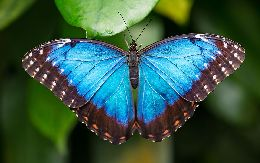

BUTTERFLY SHOWCASE
Check out our butterfly conservatory showcasing over
20 butterfly species including:
Blue Morpho

Submitted by user iosborn22. Blue morpho butterflys
wings are bright nlue, edged with black. Blue morpho is among
the largest butterfleis in the owrld, with wings spanning from five to eight inches. When
blue morpho flies, the contrasting bright blue
and dull brown colors flash, making it look like the morpho is
appearing and disappearing.
Old World SwallowTail

Submitted by user smoothj282. Papilio machaon, the old world swallowtail, is a species of swallowtail
that naturally occurs in Europe, Africa, Asia, and even North America. It prefers to lay eggs on Apiaceae plants.
It is a medium sized swallowtail that is relatively easy to rear
and breed in captivity.
OUR MISSION STATEMENT
Butterfly World is is a unique Lepidoptera source in our state, featuring an 8,000-square
foot indoor conservatory home to some 4,000 exotic and domestic butterfleis in a tropical environment. BUtterfly WOrld focuses on butterfly-related
education, recreation, entertainment and gardening needs.
LATEST NEWS
By Cheri Plum, posted April 31, 2022
Butterfly World Opens Its Doors

|
Need More Data?
Contact Us with your questions, ideas and suggestions.
Link.
|
© 2038 ButterflyWorld.info |